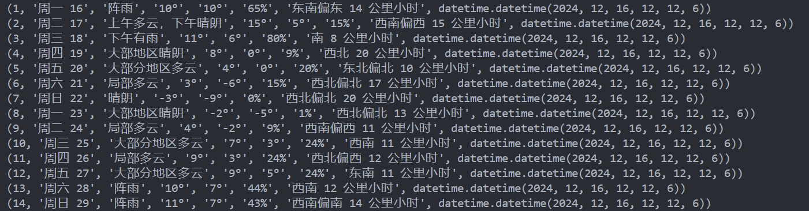

爬虫爬取天气数据
本程序的源代码存放在 spider-for-weathersite 中，所有内容以 CC BY-SA 4.0 协议 开放。
概述
该爬虫项目用于爬取全球天气信息并将数据存入 MySQL 数据库的完整爬虫程序。它通过多线程技术加速多个省市天气数据的抓取，并利用 Selenium 和 BeautifulSoup 进行网页数据抓取和解析。爬取的天气数据包括日期、天气状况、最高气温、最低气温、湿度和风力等信息。数据被存储到本地 MySQL 数据库中，并且每个省市的数据会被单独创建一张表格。程序使用了线程池、Selenium 模拟浏览器行为和 MySQL 数据库操作来实现目标。
技术分析
技术难点：
抓取动态网页数据；
解决 cookie 问题；
多线程爬取提高速率；
利用时间戳增量式爬取并按时更新预报天气信息；
动态网页爬取方法
使用 selenium 库，通过浏览器模拟操作，获取动态网页内容；
对获取的动态网页内容进行 js 分析，定位到所需的内容数据；
由于该网页的预报信息不是返回的 json 数据，而是通过 js 代码动态生成的，因此需要使用 selenium 模拟浏览器行为，获取动态网页内容；
多线程提高爬取速率
利用线程池，将任务分配给多个线程，每个线程负责抓取对应location的预报天气信息；
数据清洗
process_weather_data 函数对抓取到的原始天气数据进行简单的清洗和格式化，去除不必要的字符（例如 /），并将数据存储成字典格式，便于后续存入数据库。
MySQL 数据库
使用 pymysql，将清洗后的数据以--的形式插入数据库的对应 table 中；
每次爬取的数据会在数据库中创建一张以省市名称命名的表格，表格结构包括日期、天气状况、气温、湿度和风力等字段；
插入数据时使用了 executemany 方法批量插入，减少数据库的操作次数，提高效率；
代码实现思路
1. 配置环境导入 Python 库和依赖包：
Python import pymysql
from datetime import datetime
import requests
from bs4 import BeautifulSoup
import datetime
from selenium import webdriver
from selenium.webdriver.common.by import By
import time
from selenium.webdriver.chrome.service import Service
from webdriver_manager.chrome import ChromeDriverManager
from selenium.webdriver.chrome.options import Options
from selenium.webdriver.support.ui import WebDriverWait
from selenium.webdriver.support import expected_conditions as EC
from selenium.webdriver.common.keys import Keys
from selenium.webdriver.common.action_chains import ActionChains
from concurrent.futures import ThreadPoolExecutor
2. 用户输入省市信息：
用户通过命令行输入一组省市名称（例如“北京+北京，广东省+广州市，浙江省杭州市”）。程序将根据这些输入启动相应的爬取任务。
Python def main ():
# 获取省份和市区输入
locations = input ( "请输入省份和市区（如：北京，广东省广州市，美国洛杉矶）：" ) . split ( '，' )
进入 venv 虚拟环境并输入想获取天气地区的名称：
DevTools 表示当前执行的进程数：
3. 使用线程池并行处理多个爬取任务：
程序利用 ThreadPoolExecutor 创建一个线程池，并为每个省市名称提交一个爬取任务。通过并行化技术加速数据抓取过程。
Python # 使用线程池进行并行处理
with ThreadPoolExecutor ( max_workers = 5 ) as executor :
# 为每个城市/省份对提交一个爬取任务
futures = [ executor . submit ( spider , location . strip ()) for location in locations ]
# 等待所有线程完成任务
for future in futures :
future . result ()
4. 爬取天气数据：
spider() 函数负责启动 Selenium 浏览器，并模拟用户输入省市名称进行搜索，模拟用户点击并正确抵达目标界面，并从页面中提取所需的天气数据获取的数据会通过函数 process_weather_data 进行清洗和格式化，然后存储到数据库中。
Python def spider ( location ):
# 设置自定义的请求头（伪装成正常浏览器）
chrome_options = Options ()
chrome_options . add_argument ( '--ignore-certificate-errors' ) # 忽略 SSL 错误
chrome_options . add_argument ( '--disable-extensions' ) # 禁用扩展
chrome_options . add_argument ( '--headless' ) # 无头模式（可选）
chrome_options . add_argument ( '--disable-gpu' ) # 禁用 GPU（可选）
chrome_options . add_argument ( 'user-agent=Mozilla/5.0 (Windows NT 10.0; Win64; x64) AppleWebKit/537.36 (KHTML, like Gecko) Chrome/92.0.4515.159 Safari/537.36' )
# 启动 Chrome 浏览器
# 使用 Service 来指定 ChromeDriver 路径
service = Service ( r "E:\Code-Libary\Python\CrawlerPro\chromedriver-win64\chromedriver.exe" )
browser = webdriver . Chrome ( service = service , options = chrome_options )
chrome_options . set_capability ( "pageLoadStrategy" , "eager" )
browser . get ( 'https://weather.com/zh-CN/weather/today/l/CHXX0008:1:CH' )
time . sleep ( 2 )
# 定位 placeholder="搜索城市或邮编" 的 <input> 元素·并将location输入
input_element = browser . find_element ( By . CSS_SELECTOR , 'input[placeholder="搜索城市或邮编"]' )
input_element . send_keys ( location )
try :
# 等待输入框出现并获取元素
input_element = WebDriverWait ( browser , 5 ) . until (
EC . element_to_be_clickable (( By . CSS_SELECTOR , "input[aria-controls='LocationSearch_listbox']" ))
)
# 获取输入框的位置和尺寸
input_location = input_element . location
input_size = input_element . size
# 计算点击位置（以输入框的正中间偏下200像素）
click_x = input_location [ 'x' ] + input_size [ 'width' ] / 2
click_y = input_location [ 'y' ] + input_size [ 'height' ] / 2 + 30 # 向下偏移30像素
time . sleep ( 1 )
# 使用 ActionChains 进行鼠标点击
actions = ActionChains ( browser )
actions . move_to_element_with_offset ( input_element , click_x - input_location [ 'x' ], click_y - input_location [ 'y' ])
actions . click () . perform ()
# 通过 JavaScript 隐藏广告元素
ad_elements = browser . find_elements ( By . CSS_SELECTOR , "div.Card--content--I0ayG" )
for ad in ad_elements :
browser . execute_script ( "arguments[0].style.display = 'none';" , ad )
except Exception as e :
print ( f "Error: { e } " )
# 定位 data-from-string="localsuiteNav_3_10 天" 的 <a> 元素并点击
a_element = browser . find_element ( By . CSS_SELECTOR , 'a[data-from-string="localsuiteNav_3_10 天"]' )
a_element . click ()
# 定位在 id="detailIndex0" 的 <details> 元素下的 <svg> 元素
# <svg set="ui" name="caret-up" class="Icon--icon--ySD-o Disclosure--SummaryIcon--ldYIx DaypartDetails--SummaryIcon--1UVaq" theme data-testid="Icon" viewBox="0 0 24 24">
svg_element = browser . find_element ( By . CSS_SELECTOR , 'details#detailIndex0 svg[name="caret-up"][data-testid="Icon"]' )
# 滚动到目标元素
browser . execute_script ( "arguments[0].scrollIntoView(true);" , svg_element )
time . sleep ( 1 ) # 等待滚动完成
# 查找等待元素并点击
wait = WebDriverWait ( browser , 10 )
svg_element = wait . until ( EC . element_to_be_clickable (( By . CSS_SELECTOR , 'svg[name="caret-up"][data-testid="Icon"]' )))
svg_element . click ()
# 初始化一个列表，用于存储每个 detailIndex 的天气数据
weather_data_list = []
# 从 detailIndex0 到 detailIndex14
for i in range ( 15 ): # 从 0 到 14
if i == 0 :
# 定位 id="detailIndex0" 的 <details> 元素下的 <div> 元素，具有 data-testid="DetailsSummary"
details_element = browser . find_element ( By . CSS_SELECTOR , 'details#detailIndex0 div[data-testid="DetailsSummary"]' )
# 打印 id="detailIndex0" 的 <details> 元素的内容
if details_element :
print ( f "Details Element Text (detailIndex { i } ): " , details_element . text ) # 打印匹配元素的文本内容
weather_data_list . append ( details_element . text ) # 将文本内容添加到列表中
else :
# 对于 detailIndex1 到 detailIndex14，只定位 <details> 元素
details_element = browser . find_element ( By . CSS_SELECTOR , f 'details#detailIndex { i } ' )
# 打印匹配的 <details> 元素的文本内容
if details_element :
print ( f "Details Element Text (detailIndex { i } ): " , details_element . text )
weather_data_list . append ( details_element . text ) # 将文本内容添加到列表中
# 获取当前天气预报的城市名称
city_name = browser . find_element ( By . CSS_SELECTOR , 'span[data-testid="PresentationName"].LocationPageTitle--PresentationName--YxTV7' ) . text
# 调用 database 函数将所有爬取的天气数据存入数据库
if weather_data_list :
print ( city_name )
database ( city_name , weather_data_list )
else :
print ( "No weather data was fetched." )
执行完爬取数据部分后，对应天气数据最后会输出当前数据的地区信息，终端会输出以下结果：
5. 处理并清洗天气数据：
对抓取到的天气数据进行处理和清洗（如去除多余的符号），并将数据组织成字典格式以便插入数据库。
Python def process_weather_data ( weather_data ):
# 按 \n 分割数据
parts = weather_data . split ( ' \n ' )
# 去除 '/' 符号
for i in range ( len ( parts )):
parts [ i ] = parts [ i ] . replace ( '/' , '' )
# 根据数据的顺序命名
date = parts [ 0 ]
weather = parts [ 1 ]
maxtemperature = parts [ 2 ]
mintemperature = parts [ 3 ]
humidity = parts [ 4 ]
windy = parts [ 5 ]
# 返回一个字典，包含各个字段
return {
'date' : date ,
'weather' : weather ,
'maxtemperature' : maxtemperature ,
'mintemperature' : mintemperature ,
'humidity' : humidity ,
'windy' : windy
}
6. 将数据存入数据库：
Python def database ( location , weather_data_list ):
processed_data = [ process_weather_data ( data ) for data in weather_data_list ]
# 输出结果
for entry in processed_data :
print ( entry )
# 连接MySQL数据库
conn = pymysql . connect (
host = 'localhost' ,
user = 'root' ,
password = '***********' ,
database = 'spider_weather_db'
)
cursor = conn . cursor ()
# 删除已有的表格
drop_table_query = f "DROP TABLE IF EXISTS ` { location } `;"
cursor . execute ( drop_table_query )
# 创建表格（表名为用户输入的省份+市区），并添加时间戳字段
create_table_query = f """
CREATE TABLE ` { location } ` (
id INT AUTO_INCREMENT PRIMARY KEY,
date VARCHAR(255),
weather VARCHAR(255),
maxtemperature VARCHAR(255),
mintemperature VARCHAR(255),
humidity VARCHAR(255),
windy VARCHAR(255),
timestamp TIMESTAMP DEFAULT CURRENT_TIMESTAMP -- 时间戳字段
)
"""
cursor . execute ( create_table_query )
# 批量插入数据
insert_query = f """
INSERT INTO ` { location } ` (date, weather, maxtemperature, mintemperature, humidity, windy)
VALUES (%s, %s, %s, %s, %s, %s)
"""
# 使用 executemany 插入批量数据
cursor . executemany ( insert_query , [
( entry [ 'date' ], entry [ 'weather' ], entry [ 'maxtemperature' ], entry [ 'mintemperature' ], entry [ 'humidity' ], entry [ 'windy' ])
for entry in processed_data
])
# 提交事务
conn . commit ()
# 查询并打印整个表单
cursor . execute ( f "SELECT * FROM ` { location } `" )
rows = cursor . fetchall ()
for row in rows :
print ( row )
# 关闭连接
cursor . close ()
conn . close ()
存入数据库前会最后输出一次当前地点的天气数据信息：

程序运行
Your browser does not support the video tag.
总结
Question
选择该网站爬取的主要原因是，当前市面上的天气预报网站大多采用图形化的天气预报形式，且为了适应多平台的使用需求，大多使用动态web框架技术，较难获取其天气数据。
该天气网站的天气预报数据以文字+表格的形式，相较于先前使用图形化预报，数据容易获取，此外该网站在国内外均可访问，且能查询全球的天气预报。
前景展望
可发展的方向 ：该程序通过数据库将爬取的数据进行整合，使用者可以非常方便地对不同地方的天气进行查询和爬取，此外可以通过 Python 实现自动化增量式爬取，并通过时间戳设置爬取周期，以实现对实时天气数据的实时更新。该程序的使用者可以零成本使用到能够实时获取全球天气数据。存在的缺陷 ：此程序可以进一步优化打包成 API，方便使用者通过 API 接口调用，以实现对天气数据的实时查询，但由于该程序是通过 Selenium 模拟浏览器实时爬取网页，数据爬取速度不是很理想，相较于各天气预报公司提供的原生 API 接口，该程序存在的劣势还是非常明显的。